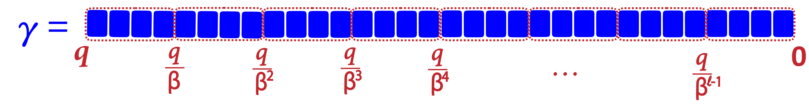

The Beginner’s Textbook
for Fully Homomorphic Encryption
Ronny Ko
LG Electronics Inc.
January 1, 2025
Abstract
Fully Homomorphic Encryption (FHE) is a cryptographic scheme that enables computations to
be performed directly on encrypted data, as if the data were in plaintext. After all computations
are performed on the encrypted data, it can be decrypted to reveal the result. The decrypted
value matches the result that would have been obtained if the same computations were applied
to the plaintext data.
FHE supports basic operations such as addition and multiplication on encrypted numbers.
Using these fundamental operations, more complex computations can be constructed, including
subtraction, division, logic gates (e.g., AND, OR, XOR, NAND, MUX), and even advanced
mathematical functions such as ReLU, sigmoid, and trigonometric functions (e.g., sin, cos).
These functions can be implemented either as exact formulas or as approximations, depending
on the trade-off between computational efficiency and accuracy.
Fully Homomorphic Encryption (FHE) enables privacy-preserving machine learning by
allowing a server to process the client’s data in its encrypted form through an ML model. With
FHE, the server learns neither the plaintext version of the input features nor the inference
results. Only the client, using their secret key, can decrypt and access the results at the end
of the service protocol. FHE can also be applied to confidential blockchain services, ensuring
that sensitive data in smart contracts remains encrypted and confidential while maintaining the
transparency and integrity of the execution process. Other applications of FHE include secure
outsourcing of data analytics, encrypted database queries, privacy-preserving searches, efficient
multi-party computation for digital signatures, and more.
This book is designed to help the reader understand how FHE works from the mathematical
level. The book comprises the following four parts:
Part I: Basic Mathexplains necessary background concepts for FHE, such as Group,
Field, Order, Polynomial Ring, Cyclotomic Polynomial, Vectors and Matrices, Chinese
Remainder Theorem, Taylor Series, Polynomial Interpolation, and Fast Fourier Transform.
??: ?? explains well-known lattice-based cryptographic schemes, which are LWE, RLWE,
GLWE, GLev, and GGSW cryptosystems.
??: ?? explains the generic techniques of FHE adopted by many existing schemes, such as
homomorphic addition, multiplication, modulus switching, and key switching.
??: ?? explains four widely used FHE schemes: TFHE, BFV, CKKS, and BGV, as well as
their RNS-variant versions.
These parts are designed in an incremental manner, and therefore understanding each part requires
the understanding of its prior part(s).
Please report any bugs or suggestions regarding the draft to the GitHub Issues
Board.
Acknowledgments
Special thanks are extended to Robin Geelen (KU Leuven) for his thoughtful and dedicated comments,
and to Yongwoo Lee (Inha University) for his general advice.
This chapter explains the basic mathematical components of the Number theory: group, field, order, roots
of unity, cyclotomic polynomial, polynomial ring, and decomposition. These are essential building blocks
for post-quantum cryptography.
modulo is an operation of computing the remainder after dividing a number by another
number. modulo is often abbreviated as mod.
a mod q (i.e., a modulo q) is the remainder after dividing a by q, which is always one
element among {0,1,2,3,,q − 1}. For example, 7 mod 5 = 2, because the remainder
of dividing 7 by 5 is 2.
modulus: Given a mod q, we call the divider q the modulus, whereas modulo is an
operation.
Modulo Congruence (≡): a is congruent with b modulo a (i.e., a ≡ b mod q) if
they have the same remainder when divided by a. For example, 5 ≡ 12 mod 7, because
5 mod 7 = 5 and 12 mod 7 = 5. In mathematics, the notation a ≡b mod q is identical to
a = b (mod q), meaning that the remainder of a divided by q is the same as the remainder
of b divided by q. Note that this notation is different from a = b mod q, meaning that a
is identical to the remainder of b divided by q,
Congruence v.s. Equality:
a ≡b mod q⟺a = b + k ⋅q (for some integer k)
This means that a and b are congruent modulo q if and only if a and b are different by
some multiple of q. For example, 5 ≡ 12 mod 7⟺5 = 12 + (−1) ⋅ 7
A-1.2 Modulo Arithmetic
The supported modulo operations are addition, subtraction, and multiplication. The properties of these
modulo operations are as follows:
Distributive: (a ⋅ (b + c)) ≡ ((a ⋅b) + (a ⋅c)) mod q
4.
Interchangeable: Congruent values are interchangeable in the modulo arithmetic.
For example, suppose (a ≡b mod q) and (c ≡d mod q). Then, a and c are interchangeable,
and b and d are interchangeable in modulo arithmetic as follows:
(a + c) ≡ (c + d) ≡ (a + d) ≡ (b + c) mod q
(a −c) ≡ (c −d) ≡ (a −d) ≡ (b −c) mod q
(a ⋅c) ≡ (c ⋅d) ≡ (a ⋅d) ≡ (b ⋅c) mod q
The proof of Theorem A-2.1.2 is similar to that of Theorem A-2.1.1, which we leave as an exercise for
the reader.
In modulo q (i.e., in the world of remainders where all numbers have been divided by q), for
each a ∈{0,1,2,,q − 1}:
Additive Inverse of a is denoted as a+−1 that satisfies a+a+−1≡ 0 mod q. For example,
in modulo 11, 3+−1 = 8, because 3 + 8 ≡ 0 mod 11.
Multiplicative Inverse of a is denoted as a∗−1 that satisfies a + a∗−1≡ 1 mod q. For
example, in modulo 11, 3∗−1 = 4, because 3 ⋅ 4 ≡ 1 mod 11.
A-1.2.2 Modulo Division
In modulo arithmetic, modulo division is different from regular numeric division. In fact, there is no such
thing as modulo division, because modulo is already a division operation that outputs a remainder.
modulo division of b by a mod q is equivalent to computing the modulo multiplication b⋅a∗−1 mod q. The
result of modulo division is different from that of numeric division, because modulo division always gives
some integer (as it multiplies two integers modulo q), whereas numeric division gives a real number. The
inverse of an integer modulo q can be computed by the extended Euclidean algorithm ( YouTube
tutorial)
A-1.2.3 Centered Residue Representation
Throughout this section, we have assumed that the residues are positive integers. For example, the
possible residues for mod q are assumed to be {0,1,,q − 1}. This system is called canonical (i.e.,
unsigned) residue representation. On the other hand, there is also a counterpart system that assumes
signed (i.e., centered) residues , where the residues
are centered around 0 and the number of total residues is the same: q. In both systems, a
modulo operation changes a given value to another value within the system’s residue range such
that: (1) if the given value is bigger than the upper bound of the residue range, the value is
subtracted by the modulus q; (2) if the value is smaller than the lower bound of the residue
range, the value is added by the modulus q. The only difference between these two (canonical
and centered) systems is their upper bounds and lower bounds: 0 and q − 1 in the canonical
residue system, whereas − and − 1 in the centered residue system. The canonical residue
representation assumes that ℤq = {0,1,,q − 1}, whereas the centered residue system assumes that
ℤq = .
In both systems, the same modulo property of addition, subtraction, multiplication, and division
holds, which can be proved by applying the same reasoning described in §A-1.2: the same properties hold
in both systems because any two congruent residues in the centered system are separated by the kq gaps
(for some integer k) in both systems.
Also, the same property holds for an inverse: an inverse of a modulo q is a−1 such that
a ⋅a−1≡ 1 mod q.
Using a signed residue representation is useful in certain cases. In an example of canonical (i.e.,
unsigned) residue representation, suppose we have the relation a + b mod q and we know that in a given
application, a + b is guaranteed to be within the [0,q − 1] range (i.e., 0 ≤a + b ≤q − 1). Then,
(a + b mod q) = a + b, and thus we can remove the modulo operation, simplifying the relation. Now,
suppose a different example of centered (i.e., signed) residue representation where we have the
relation a −b mod q, and we know that in a given application, a −b is guaranteed to be within
the range . Then, (a −b mod q) = a −b. However, notice that if the relation
a −b mod q were in a canonical residue representation, then we cannot remove the modulo
operation, because if a −b is negative, then this becomes smaller than the lower bound of the
canonical residue system (i.e., 0), and thus a modulo reduction (i.e., addition by one or more q) is
needed.
In ??, we design the FastBConvEx operation based on this beneficial property of centered residue
representation: in this algorithm design, we can simplify (μ + u mod bα) to μ + u, because we know that
≤μ + u < .
Set Operations (+,⋅): A set defines two operations between any two elements a,b ∈𝕊
as operands: addition (+) and multiplication (⋅)
Additive Identity (1(+)): An element i ∈ 𝕊 is an additive identity if for all a ∈ 𝕊,
i + a = a.
Multiplicative Identity (1(⋅)): An element i ∈𝕊 is an additive identity if for all a ∈𝕊,
i ⋅a = a
Additive Inverse (a−1): For each a ∈𝕊, its additive inverse a−1 is defined as an element
such that a + a−1 = 1(+) (i.e., additive identity)
Multiplicative Inverse (a−1): For each a ∈𝕊 except for a = 0, its multiplicative inverse
a−1 is defined as an element such that a ⋅a−1 = 1(⋅) (i.e., multiplicative identity)
Element Operation Features
Closed: A set 𝕊 is closed under the (+) operation if for every a,b ∈𝕊, it is the case that
a + b ∈𝕊. Likewise, a set 𝕊 is closed under the (⋅) operation if for every a,b ∈𝕊, it is the
case that a ⋅b ∈𝕊.
Associative: (a + b) + c = a + (b + c)
Commutative: a + b = b + a
Distributive: a ⋅ (b + c) = (a ⋅b) + (a ⋅c)
Group Types
Semigroup: A semigroup is a set of elements which is closed and associative on a single
operation (+ or ⋅)
Monoid: A monoid is a semigroup, plus it has an identity element, which returns the
other operand over the set operation.
(e.g., 0 is the identity element for + operator, 1 is the identity element for the ⋅ operator)
Group: A group is a monoid, plus every element has an inverse (except for that of 0, the
identity)
Abelian Group: An abelian group is a group, plus its operation is commutative.
A-2.2 Examples
ℤ (i.e., a set of all integers) is an abelian group under addition (+), because:
Closed: For any integer a,b ∈ℤ, a + b = c is also an integer (∈ℤ).
Associative: For any integer a,b,c ∈ℤ, (a + b) + c = a + (b + c).
Identity: The additive identity is 0, because for any a ∈ℤ, a + 0 = a.
Inverse: For each a ∈ℤ, its additive inverse is −a, as a + (−a) = 0.
Commutative: For any integer a,b ∈ℤ, a + b = b + a.
ℤ is a monoid under multiplication (⋅), because:
Closed: For any integer a,b ∈ℤ, a ⋅b = c is also an integer (∈ℤ).
Associative: For any integer a,b,c ∈ℤ, (a ⋅b) ⋅c = a ⋅ (b ⋅c).
Identity: The multiplicative identity is 1, because for any a ∈ℤ, a ⋅ 1 = a.
NO Inverse: For an integer a ∈ℤ, its multiplicative inverse is , but this is not necessarily an
integer (∉ℤ), and thus breaks the closure property.
ℝ (i.e., a set of all real numbers) is an abelian group under multiplication (⋅), because:
Closed: For any real number a,b ∈ℝ, a ⋅b = c is also a real number (∈ℝ).
Associative: For any real number a,b,c ∈ℝ, (a ⋅b) ⋅c = a ⋅ (b ⋅c).
Identity: The multiplicative identity is 1, as for any real number a ∈ℝ, a ⋅ 1 = a.
Inverse: For each real number a ∈ℝ (except for 0, the identity), its multiplicative inverse is ,
which is a real number (∈ℝ).
Ring: A set of elements which is an abelian group under the + operator, and closed,
associative, and distributive on the (+,⋅) operators.
Field: A set of elements which is an abelian group under both the (+,⋅) operators (i.e., the
set has an identity element and multiplicative inverses for all elements), and distributive
on those operators.
Galois Field (GF(pn)): A field with a finite number of elements (whose number must
be pn for some prime p and a positive integer n).
ℤp(ℤ∕pℤ): The finite field of integer modulo p, which is {0,1,2,... p − 1} where p is
a prime number. If p is a prime number, ℤp is always a finite field. This is also called a
quotient ring of p.
A-3.2 Examples
ℤ (a set of all integers) is a ring, but not a field, because not all of its elements have a multiplicative
inverse (as shown in §A-2.2).
ℝ (a set of all real numbers) is a field. As shown in §A-2.2, it is an abelian group over the (+) and (⋅)
operators, and its elements are distributive over the (+,⋅) operators.
ℤ7 = {0,1,2,3,4,5,6} is a finite field because:
Closed: For any a,b ∈ ℤ7, there exists some c1∈ ℤ7 such that a + b ≡ c1 mod 7 and, some
c2∈ℤ7 such that a ⋅b ≡c2 mod 7.
Associative: For any a,b,c ∈ℤ7, (a + b) + c = a + (b + c) and (a ⋅b) ⋅c = a ⋅ (b ⋅c).
Commutative: For any a,b ∈ℤ7, a + b = b + a, and a ⋅b = b ⋅a.
Distributive: For any a,b,c ∈ℤ7, (a + b) ⋅c = a ⋅c + b ⋅c.
Identity: For any a ∈ℤ7, its additive identity is 0, and its multiplicative identity is 1.
Inverse: For any a ∈ℤ7, there exists an additive inverse a1′∈ℤ7 such that a1 +a1′≡ 0 mod 7.
For example, if a1 = 3, then its additive inverse a1′ = 4, because 3 + 4 = 7 ≡ 0 mod 7.
Also, for any a2∈ ℤ7 (except for 0), there exists a multiplicative inverse a2′ ∈ ℤ7 such that
a2⋅ a2′ ≡ 1 mod 7. For example, if a2 = 3, then its multiplicative inverse a2′ = 5, because
3 ⋅ 5 = 15 ≡ 1 mod 7.
Size of Finite Field: A finite field is called Galois field and always has pn elements
(where p is a prime and n is a positive integer).
2.
Isomorphic Fields: Any two finite fields, 𝔽1 and 𝔽2 with the same number of elements
are isomorphic (i.e., there exists a bi-jective one-to-one mapping function f : 𝔽1→𝔽2 and
the algebraic operations (+,⋅) preserve correctness among newly mapped elements). In
other words, there exists a mapping function f : 𝔽1→𝔽2 comprised of the field operators
(+, ⋅). For such an isomorphic function f, for any a,b ∈ 𝔽1, f(a + b) = f(a) + f(b) and
f(a ⋅b) = f(a) ⋅f(b)
For a ∈𝔽, and n ≥ 1, an = 1 if and only if ord𝔽(a)n
(i.e., ord𝔽(a) divides n).
Proof.
1.
Forward Proof: If ord𝔽(a) | n, then for ord𝔽(a) = k where k is a’s order, and n = lk for some
integer l.
Then, an = alk = (ak)l = 1l = 1.
2.
Backward Proof: If an = 1, then for ord𝔽(a) = k, n ≥ k, because by definition of order, k is the
smallest value that satisfies ak = 1. For any n > k, n has to be a multiple of k, because in order
to satisfy an = ak⋅an−k = 1 ⋅an−k = 1, the next smallest possible value for n is 2k (as ak is the
smallest value that is equal to 1). By induction, the possible values of n are n = k,2k,3k,.
Note that by definition of order, x = k is the smallest value that satisfies ax = 1. Thus, given
ord𝔽(an) = m, then m is the smallest integer that makes (an)m = 1. Note that (an)m should be
a multiple of ak, which means mn should a multiple of k. The smallest possible integer m that
makes mn a multiple of k is m = .
Given k | n, ord𝔽(a) = kn if and only if ord𝔽(ak) = n.
Proof.
1.
Forward Proof: Given ord𝔽(a) = kn, and given Theorem A-4.2.2, ord𝔽(ak) = = =
n.
2.
Backward Proof: Given ord𝔽(ak) = n, we should prove that ord𝔽(a) = nk. Let ord𝔽(a) = m.
Then, by TheoremA-4.2.2, ord𝔽(ak) = , which is n. In other words, m = n⋅ gcd(m,k).
But as k | n, it is also true that k | m. Then, gcd(m,k) = k. Therefore, m = n⋅ gcd(m,k) = nk.
{a1,a2,... ap} forms a multiplicative subgroup H of the group G = 𝔽× (i.e., 𝔽 without {0}).
2.
Lagrange’s Group Theory states that for any subgroup H in a group G, |H| divides |G|. This
means that given ordG(a) = k (where ak = 1), k divides |G| (where |G| = p − 1).
3.
Therefore, given kl = p − 1 for some integer l, ap−1 = (ak)l = 1l = 1. Thus, ap = a.
A polynomial ring is a set of polynomials where polynomial computations over the (+,⋅)
operators (e.g., f1 + f2, f1⋅ (f2−f3), f1 + f2 + f4) are closed, associative, commutative, and
distributive.
A polynomial ring ℤq[x]∕(xn + 1) is a set of all polynomials fi that have the following
properties:
For a polynomial f ∈ℤq[x]∕(xn + 1) where f = c0 + c1x1 + + cn−1xn−1:
Coefficient Ring: fi’s each polynomial coefficient cj is in integer modulo p.
(i.e., ci + q ≡ci mod q).
Degree Ring: Any polynomial f′ can be broken down to:
f′ = (xn + 1)(fq) + fr≡fr∈ℤq[x]∕(xn + 1)
, where fq is called a quotient polynomial and fr is called a remainder polynomial resulting
from the polynomial division of f′ divided by xn + 1.
Polynomial Congruence: If two polynomials are congruent, they belong to the same
equivalence class, in which case they are interchangeable in the polynomial operations
(+,⋅) in the polynomial ring. For example, if:
f′≡fr1∈ℤq[x]∕(xn + 1)
f′′≡fr2∈ℤq[x]∕(xn + 1)
fr1 + fr2≡fr3∈ℤq[x]∕(xn + 1)
, then the polynomial operation result of f′ + f′′ is in the same equivalence class as:
f′ + f′′≡fr1 + fr2≡fr3∈ℤq[x]∕(xn + 1)
To make the notation simple, we denote the polynomial ring ℤq[x]∕(xn + 1) as R⟨n,q⟩
Recall that in an integer ring ℤp, a big number b can be divided by p and b = q ⋅p + r ≡r mod p (the
quotient q gets eliminated). Similarly, in a polynomial ring R⟨n,q⟩, a high-degree polynomial fbig can be
divided by polynomial modulo xn + 1, which gives:
fbig = (Xn + 1) ⋅ (fq) + fr≡fr∈R⟨n,q⟩
, whereas fq is a quotient polynomial and fr is a remainder polynomial. In this case, fbig is congruent to
(i.e., is in the same equivalence class as) fr. Thus, fq can be eliminated and fr (i.e., the
simplified version of fbig) can be interchangeably used for polynomial operations (+,⋅) in
the polynomial ring. Polynomial simplification in a polynomial ring is done by substituting
xn≡ −1 into fbig, because xn + 1 ≡ 0 in the polynomial ring (this is the same as the case of a
number ring modulo p where p ≡ 0). This way, a high-degree polynomial fbig can be recursively
simplified to a polynomial of degree less than n by recursively substituting xn≡ −1 into
fbig.
For a polynomial modulo, we normally choose a cyclotomic polynomial xn + 1 (where n is 2p for some
integer p) as the divisor, as it provides computational efficiency.
A-5.1.1 Example
Given f ∈ℤ7[x]∕(x2 + 1), suppose f = x4 + 3x3 + 11x2 + 6x + 10. Then,
f = (x2) ⋅ (x2) + 3x ⋅ (x2) + 11x2 + 6x + 10
≡ (−1)(−1) + 3x(−1) + (11 mod 7)(−1) + 6x + (10 mod 7)
= 3x ∈ℤ7[x]∕(x2 + 1)
Thus, f(x) = x4 + 3x3 + 11x2 + 6x + 10 is equivalent to (≡) 3x in the polynomial ring ℤ7[x]∕(x2 + 1).
A-5.1.2 Discussion
Integer Ring
Polynomial Ring
Set Elements
number
polynomial
Ring Notation
ℤp = {0,1,,p − 1}
ℤp[x]∕(xn + 1)
& Definition
A set of all integers between 0 and p
A set of all polynomials f such that
f = c0 + c1x1 + c2x2 + cn−1xn−1
where each coefficient ci∈ℤp
and f’s degree is less than n
Supported
(+,⋅)
(+,⋅)
Operations
(Addition, Multiplication)
(Addition, Multiplication)
(+) Operation
We know how to add numbers
fa = a0 + a1x1 + a2x2 + ada−1xda−1
fb = b0 + b1x1 + b2x2 + bdb−1xdb−1
Then, fa + fb is computed as:
fc = ∑i=0max(da,db)(ai + bi)xi
(⋅) Operation
We know how to multiply numbers
fa = a0 + a1x1 + a2x2 + ada−1xda−1
fb = b0 + b1x1 + b2x2 + bdb−1xdb−1
Then, fa⋅fb is computed as:
fc = ∑i=0da+db∑j=0iajbi−jxi
For a,b ∈ℤp
For fa,fb∈ℤp[X]∕(xx + 1),
Commutative
a + b = b + a
fa + fb = fb + fa
Associative
(a + b) + c = a + (b + c)
(fa + fb) + fc = fa + (fb + fc)
Distributive
a ⋅ (b + c) = a ⋅b + a ⋅c
fa⋅ (fb + fc) = fa⋅fb + fa⋅fc
Closed
a + b ≡c ∈ℤp, a ⋅b ≡d ∈ℤp
fa + fb≡fc∈R⟨n,q⟩,
fa⋅fb≡fd∈R⟨n,q⟩
Congruency (≡)
Two numbers a ≡b in modulo p if:
Two polynomials fa≡fb in ℤp[x]∕(xn + 1) if:
(a mod p) = (b mod p)
f′a = fa mod (xn + 1) = ∑i=0daaixi
f′b = fb mod (xn + 1) = ∑i=0dbbixi,
da = db and ai≡bi in modulo p
for all 0 ≤i ≤da
Table 1: Comparison between a number ring and a polynomial ring.
Congruency: If two numbers are congruent, they are in the same congruency class. The same is true for
two congruent polynomials. If the computation results of two mathematical formulas belong to the same
congruency class, then their computations wrap around within modulo of their congruency. This is a
useful property for cryptographic schemes where encryption & decryption computations wrap
around their values within a limited set of binary bits. Congruency is useful for simplifying
computation. For example, a big number or a complex polynomial can be normalized to a
simpler number or polynomial by using the congruency rule, which reduces the computation
overhead.
Polynomial Evaluation: Note that two numbers that belong to the same congruency class are not
necessarily the same number. For example, 5 ≡ 10 modulo 5, but these two numbers are not the same.
Likewise, two congruent polynomials are not the same. While two congruent polynomials
in a polynomial ring can be interchangeably used for polynomial operations supported in
the ring (i.e., (+,⋅)), such as f1 + f2 or f1⋅ (f2−f3), two congruent polynomials do not
necessarily give the same result when they are evaluated for a certain variable value x = a. For
example, in the previous example of §A-5.1.1, the two polynomials x4 + 3x3 + 11x2 + 6x + 10 and
3x are congruent in the polynomial ring ℤ7[x]∕(x2 + 1). However, these two polynomials do
not give the same evaluation results for x = 0: the original polynomial gives 10, whereas the
reduced (i.e., simplified) polynomial gives 0. This discrepency in evaluation occurs because we
defined two polynomials M1 and M2 to be congruent over xn + 1 (i.e., M1≡ M2) if their
remainder is the same after being divided by Xn + 1 (i.e., M1 = Q ⋅ (Xn + 1) + M2 for some
polynomial Q). Therefore, M1 and M2 will be evaluated to the same polynomial M2 if they are
evaluated at the x values such that Xn = −1, which make the Xn + 1 term 0. The solutions for
xn = −1 are called the n-th roots of unity, which we will learn in ?? and ??. We summarize as
follows:
⟨Summary A-5.1.2⟩ Polynomial Evaluation over Polynomial
Ring
Suppose polynomials M1 and M2 are congruent over the polynomial ring xn + 1. This is
equivalent to the following relation: M1 = Q ⋅ (Xn + 1) + M2Q for some polynomial Q.
Then, M1(X) and M2(X) are guaranteed to be evaluated to the same value if X = xi is the
solution for Xn + 1 (i.e., X is the n-th root of unity). That is , M1(xi) = M2(xi).
Number Ring & Polynomial Ring: These two rings share many common characteristics, which are
summarized in Table 1.
A-5.2 Coefficient Rotation
Coefficient rotation is a process of shifting the entire coefficients of a polynomial (either to the left or
right) in a polynomial ring. In order to rotate the entire coefficients of a polynomial by h positions to the
left, we multiply x−h to the polynomial.
For example, suppose we have a polynomial as follows:
Note that multiplying the two polynomials f and x−h will have a congruent polynomial in R⟨n,q⟩.
Therefore, the rotated polynomial, which is the result of f ⋅x−h, will also have a congruent polynomial in
R⟨n,q⟩.
Note that the coefficient signs change when they rotate around the boundary of xn(= −1), as the
computation is done in the polynomial ring Zq[x]∕(xn + 1).
A-5.2.1 Example
Suppose we have a polynomial f ∈ℤ8∕(x4 + 1) as follows:
ℤ8 = {−4,−3,−2,−1,0,1,2,3}
f = 2 + 3x − 4x2−x3
The polynomial ring ℤ8∕(x4 + 1) has the following 4 congruence relationships:
x4≡−1
x4⋅x−1≡−1 ⋅x−1
x3≡−x−1
x4≡−1
x4⋅x−3≡−1 ⋅x−3
x ≡−x−3
x4≡−1
x4⋅x−2≡−1 ⋅x−2
x2≡−x−2
Then, based on the coefficient rotation technique in Summary A-5.2.1, rotating 1 position to the left is
equivalent to computing f ⋅x−1 as follows:
Decomposition is a mathematical technique to convert a large-base number into a mathematical formula
expressing the same value in a smaller base. This section will explain number decomposition and
polynomial decomposition.
A-6.1 Number Decomposition
Suppose we have the number γ modulo q. Number decomposition expresses γ as a sum of multiple
numbers in base β as follows:
γ = γ1 + γ2 + + γl
, where each of the γi term represents a base-β value shifted i bits (which is a multiple of log2β) to the
left. We call l the level of decomposition. This is visually shown in Figure 1.

Figure 1: An illustration of number decomposition.
We define the decomposition of number γ into base β with level l as follows:
Decompβ,l(γ) = (γ1,γ2,, γl).
Number decomposition is also called radix decomposition, where the base β is called a
radix.
A-6.1.1 Example
Suppose we have the number γ = 13 mod q, where q = 16. Suppose we want to decompose 13 with the
base β = 2 and level l = 4. Then, 13 is decomposed as follows:
13 = 1 ⋅ + 1 ⋅ + 0 ⋅ + 1 ⋅
Decomp2,4(13) = (1,1,0,1)
A-6.2 Polynomial Decomposition
This time, suppose we have polynomial f in the polynomial ring ℤq[x]∕(xn + 1). Therefore, each
coefficient ci of f is an integer modulo q. Polynomial decomposition expresses f as a sum of multiple
polynomials in base β and level l as follows:
We denote the decomposition of polynomial f into base β with level l as follows:
Decompβ,l(f) = (f1,f2,, fl)
A-6.2.1 Example
Suppose we have the following polynomial in the polynomial ring ℤ16[x]∕(x4 + 1):
f = 6x3 + 3x2 + 14x + 7 ∈ℤ16[x]∕(x4 + 1)
Suppose we want to decompose the above polynomial with base β = 4 and level l = 2. Then, each
degree’s coefficient of the polynomial f is decomposed as follows:
Note that after decomposition, the original coefficients of the polynomial got reduced to smaller numbers.
This characteristic is importantly used in homomorphic encryption’s multiplication, for reducing the
growth rate of the noise. Normally, the polynomial coefficients of ciphertexts are large because
they are uniformly random numbers. Reducing such big constants is important to reduce
the noise growth during homomorphic multiplication. We will discuss this more in detail in
??.
A-6.3 Approximate Decomposition
Figure 2: An illustration of approximate decomposition
If the base β does not divide the modulo q, then there exists no level l such that βl| q, thus some
lower bits of q have to be drawn away during decomposition, as shown in Figure 2. Such lower bits can be
rounded to the nearest multiple of during decomposition. In such a case, the decomposition is an
approximate decomposition.
A-6.4 Gadget Decomposition
Gadget decomposition is a generalized form of number decomposition (§A-6.1). In number decomposition,
a number γ is decomposed as follows:
γ = γ1 + γ2 + + γl
In gadget decomposition, we decompose γ as follows:
γ = γ1g1 + γ2g2 + + γlgl
We denote = (g1,g2,,gl) as a gadget vector, and Decomp(γ) = (γ1,γ2,, γl)
Then, γ = ⟨Decomp(γ),⟩
In the case of number decomposition (§A-6.1), its gadget vector is = ,,,.
 ,q − 1}. This system is called canonical (i.e.,
unsigned) residue representation. On the other hand, there is also a counterpart system that assumes
signed (i.e., centered) residues
,q − 1}. This system is called canonical (i.e.,
unsigned) residue representation. On the other hand, there is also a counterpart system that assumes
signed (i.e., centered) residues  , where the residues
are centered around 0 and the number of total residues is the same: q. In both systems, a
modulo operation changes a given value to another value within the system’s residue range such
that: (1) if the given value is bigger than the upper bound of the residue range, the value is
subtracted by the modulus q; (2) if the value is smaller than the lower bound of the residue
range, the value is added by the modulus q. The only difference between these two (canonical
and centered) systems is their upper bounds and lower bounds: 0 and q − 1 in the canonical
residue system, whereas −
, where the residues
are centered around 0 and the number of total residues is the same: q. In both systems, a
modulo operation changes a given value to another value within the system’s residue range such
that: (1) if the given value is bigger than the upper bound of the residue range, the value is
subtracted by the modulus q; (2) if the value is smaller than the lower bound of the residue
range, the value is added by the modulus q. The only difference between these two (canonical
and centered) systems is their upper bounds and lower bounds: 0 and q − 1 in the canonical
residue system, whereas − and − 1 in the centered residue system. The canonical residue
representation assumes that ℤq = {0,1,
and − 1 in the centered residue system. The canonical residue
representation assumes that ℤq = {0,1, ,q − 1}, whereas the centered residue system assumes that
ℤq =
,q − 1}, whereas the centered residue system assumes that
ℤq =  .
.
![[ q q ]
− 2,2-− 1](00-main8x.svg) . Then, (
. Then, ( .
. =
=

 +
+  +
+  +
+  +
+  +
+  +
+  +
+ 

 +
+  +
+ 
 + 2
+ 2  + 2
+ 2 

 + (2
+ (2
 during decomposition. In such a case, the decomposition is an
approximate decomposition.
during decomposition. In such a case, the decomposition is an
approximate decomposition.
 +
+  +
+ 
 +
+ 


 =
= 

 .
.